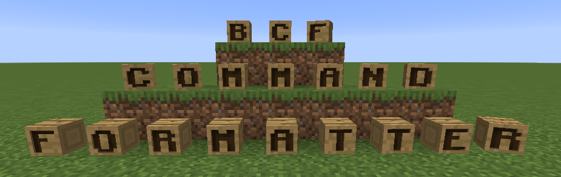

Introduction

What is bcf¶
bcf is a Command Management tool suitable for use in Bukkit/Spigot/PaperMC and Bungeecord, though it may support other platforms
in the near future.
It allows one to easily provide full command completion for all your commands as well as automatically resolve and marshal input from the user so your command gets the data it is expecting to get. For example if your command is expecting a player name then available players will be provided during command completion and your command method will receive the actual player object, or the command sender will receive an error explaining what the error is.
This library is inspired by aikar's Annotation Command Framework (ACF) which used
before I decided on the crazy idea of writing my own to support some extra
features I felt I desperately needed for some reason. The name bcf is used in recognition of that.
Features¶
-
Define your commands by simply extending a BaseCommand derived class (like
BukkitCommand) and annotating it with a@Commandto define it, with any aliases separated by a|.Example
All of@Command("mycmd|my|m") public class MyCommand extends BukkitCommand { ... }/mycmd,/my,/mare valid commands with the latter 2 designated as aliases. -
Register the class with the manager. For example in a Bukkit/Spigot/Paper based plugin you would use
BukkitManagerExample
public final class MyPlugin extends JavaPlugin { public void onEnable() { BukkitCommandManager bcf = new BukkitCommandManager(this); bcf.registerCommand(new MyCommand()); } } -
Annotate your method with
@Argto define what arguments it is expecting. This is a string of arguments that may consume 0 or more words from a users input both to provide command completion and to fully resolve and pass objects to the method.Example
@Arg("give|g @player(required=true, default=%self, mode=online)") public void onGive(CommandSender sender, Player player) { ... } -
Multiple annotations can be used and each will be checked in turn.
Example
@Arg("give|g @player(required=true, default=%self, mode=online)") @Arg("sudo give @player(required=true, default=%self, mode=online)") public void onGive(CommandSender sender, Player player) { ... } -
Nearly all annotations can be added to your class to apply to all methods (and child classes).
Example
To reach doThis the command is:@Command("do") @Arg("for @player(required=true, mode=offline)") class MyCommand extends BukkitCommand { @Arg("tpto @world") public void doThis(CommandSender, Player player, World world) { ... } }/do for <playername> tpto <worldname> -
Your class can add itself as a child of another command class to inherit any of its settings. For example a 3rd party plugin could extend your command class to add sub-commands under your own. This is done by registering the sub-class with the manager with the
registerSubCommandmethod.Example
@Arg("sudo") class MySubCommand extends BukkitCommand { @Arg("kill") public void killPlayer(CommandSender, Player player) { ... } }To execute killPlayer the full command now is:public final class AnotherPlugin extends JavaPlugin { public void onEnable() { BukkitCommandManager bcf = new BukkitCommandManager(this); bcf.registerSubCommand(MyCommand.class, new MySubCommand()); } }/do for <playername> sudo kill -
Create command aliases by adding a
@Commandannotation to a derived class. This allows shortcut commands to jump straight to a class. For example instead of/command view playernameyou can have/cv playernameas an alias -
When a command needs to send an error (for example a parameter is not valid) the class will look for a method annotated with
@Error. If it fails to find one it will check all its parent classes until it reaches the default. This allows you to override how errors are handled.Example
Will show error in green when it occurs under the@Arg("sudo") class MySubCommand extends MyCommand { @Error void onError(CommandSender sender, String message) { sender.spigot().sendMessage( new ComponentBuilder(message).color(ChatColor.GREEN).create() ); } ... }sudosubcommand otherwise will show the default red. -
When no command is reached a method annotated with
@Defaultis looked for to handle things. If no method is found then every parent class is checked until it reaches the default which outputs "Invalid Command". This can be used to provide more help.Example
Will show "A totally unhelpful message" if no method is matched in this class (or its children), otherwise it will show the default message.@Arg("sudo") class MySubCommand extends MyCommand { @Default void onDefault(CommandSender sender) { sender.spigot().sendMessage( new ComponentBuilder("A totally unhelpful message.").color(ChatColor.YELLOW).create() ); } ... } -
Add permission requirements by annotating your class or methods with
@Permission. The command sender must either be console or have at least one of the permissions at each level to proceed otherwise both command completion and execution will be ignored as if the arguments did not exist.Example
The command sender neds to have@Permission("mycmd.admin") @Permission("mycmd.command.sudo") @Arg("sudo") class MySubCommand extends MyCommand { @Permission("mycmd.admin") @Arg("kill") public void killPlayer(CommandSender, Player player) { ... } @Arg("tickle") public void ticklePlayer(CommandSender, Player player) { ... } ... }mycmd.adminto be able to use either thekillorticklesubcommands. They need eithermycmd.adminormycmd.command.sudoto access theticklecommand. Classes extending this one will respect the Permissons on their parent class. -
Support both required and optional positional parameters. A required parameter must either have a default or must have valid input provided. Optional parameters with no default and no input will be set to null.
Example
@Arg("cmd1 @player(required=false)") public void cmd1(CommandSender, Player player) { ... } @Arg("cmd2 @player(required=true, default=%self, mode=offline)") public void cmd2(CommandSender, OfflinePlayer player) { ... }cmd1does not require a player which will resolve to null if no input provided.cmd2requires a player name but if none is provided then the value%selfis provided which will resolve to the command sender if they are a player or return an error if not. -
As well as supporting positional parameters we support named parameters called
switches. To pass a switch the command sender uses-<switchname> <value(s)>and full command completion is provided. A switch becomes available in the chain of arguments once it is reached and it can have multiple aliases. A non required switch with no default value will be resolved to null. A required switch must be resolved by input sometime after the point it is defined otherwise the command will be rejected. Designating a switch parameter means it is no longer treated as positional.Example
Valid commands would be:@Arg("transfer @int(min=1,max=3) @player(switch='from|f') @player(switch='to|t') @item") public void doTransfer(CommandSender, Player from, Player to, Itemstack item) { ... }/mycmd transfer 3 -from Player1 -to Player2 diamond_sword/mycmd transfer 3 diamond_sword -t Player2 -f Player1
This would not be valid:
/mycmd transfer -from Player1 -to Player2 3 diamond_sword
Quickstart¶
-
Add the following Maven repository to your
pom.xml<!-- Bundabrg's Repo --> <repository> <id>bundabrg-repo</id> <url>https://repo.worldguard.com.au/repository/maven-public</url> <releases> <enabled>true</enabled> </releases> <snapshots> <enabled>false</enabled> </snapshots> </repository> -
Add the following dependency to your
pom.xml<dependency> <groupId>au.com.grieve.bcf</groupId> <artifactId>bukkit</artifactId> <version>1.2.9</version> </dependency>Note
Don't forget to check what the latest verison is as these documents may be out of date.
-
Shade the library into your own code by adding in your
pom.xml<build> <plugins> <plugin> <groupId>org.apache.maven.plugins</groupId> <artifactId>maven-shade-plugin</artifactId> <version>3.2.3</version> <executions> <execution> <phase>package</phase> <goals> <goal>shade</goal> </goals> </execution> </executions> <configuration> <relocations> <relocation> <pattern>au.com.grieve.bcf</pattern> <shadedPattern>${project.groupId}.${project.artifactId}.bcf</shadedPattern> </relocation> </relocations> </configuration> </plugin> </plugins> </build> -
Create a command class that extends BukkitCommand
@Command("mycmd") public class MainCommand extends BukkitCommand { @Arg("list") public void doList(CommandSender sender) { sender.spigot().sendMessage( new ComponentBuilder("Reached List").color(ChatColor.GREEN).create() ); } } -
Create a new CommandManager in your plugin, passing your plugin as a parameter and register your commandclass.
// Setup Command Manager bcf = new BukkitCommandManager(this); // Register Commands bcf.registerCommand(new MainCommand()); -
You should now be able to use
/mycmd listin-game.